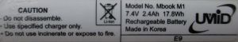
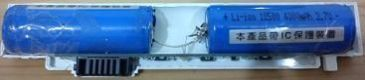
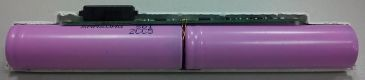
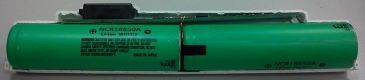

微電腦 - Mbook M1 - Panasonic 18650 3.7V 3100mA電池
司徒入手的Mbook M1電腦是經由拍賣網站購得，所以外觀已經有所磨損，再加上電池也已經沒有任何蓄電能力，司徒只好自己動手拆開更換充電電池，不然網路上販賣的整組Mbook M1原廠電池還是相當昂貴，自己換手更換還是比較省錢、也比較有樂趣
原廠電池7.4V 2400mA(Samsung ICR18650-24E 2400mA)
網友測試：Windows XP SP3、開啟無線網卡、螢幕亮度中等 => 4小時
網友測試：Windows XP SP3、關閉無線網卡、螢幕亮度中等 => 6小時

改裝後的電池7.4V 4000mA(山寨電池3.7V 4000mA)
司徒測試：Windows XP SP3、開啟無線網卡、螢幕亮度中等 => 3小時

改裝後的電池7.4V 2600mA(Samsung 18650 3.7V 2600mA)
司徒測試：Ubuntu 10.10、關閉無線網卡(連接USB D-Link DWA-110無線網卡)、螢幕亮度中等 => 4.5小時

改裝後的電池7.4V 3100mA(Panasonic 18650 3.7V 3100mA)
司徒測試：Ubuntu 10.10、關閉無線網卡(連接USB D-Link DWA-110無線網卡)、螢幕亮度中等 => 4.5小時
